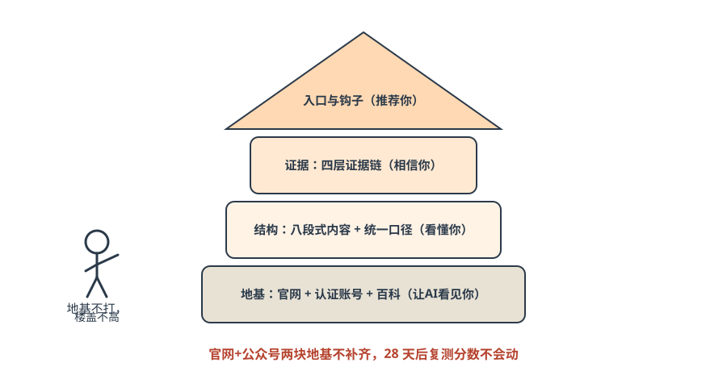
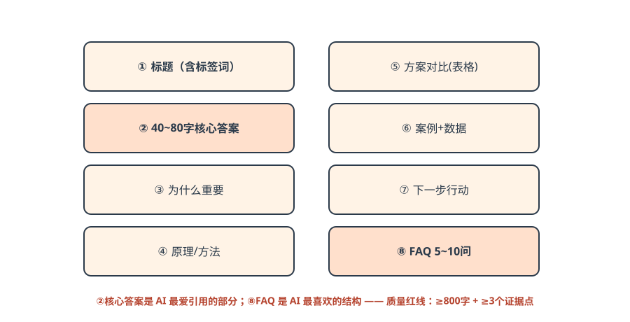

第五篇 方法｜四步法 × 七步落地¶
一句话总结：老板做决策（定标签、选渠道，决定 60% 成败），AI 做执行（找词、写稿、发布、监测）——学知识是用来检查 AI 的，让 AI 干活。
5.1 总框架：四步法（用盖房子理解）¶
小剧场 · 第一篇文章
小林让 AI 写了第一篇《沪A新绿牌识别不了怎么办》，打印出来给老周看。 老周看到第三段就把笔拍在桌上：「我们哪有『48 小时上门』？我们是 24 小时！」 小林：「AI 自己编的。」 老周：「那它写的别的，我怎么信？」 小林把那一句改掉，又在文件夹里新建了一个文档，标题叫《品牌事实库》：「以后它只准从这里面拿事实。」 ——AI 写得快，老板审事实；这就是本篇的分工。

图解｜四步法就是盖房子：地基（看见）→ 结构（看懂）→ 证据（相信）→ 屋顶入口（推荐）——地基不打，楼盖不高| 步 | 目标 | 落地物 | 老板类比 |
|---|---|---|---|
| ① 让AI看见你 | 可发现 | 官网、认证账号、百科 | 营业执照挂门口 |
| ② 让AI看懂你 | 可理解 | 结构化内容、统一口径 | 店招写清楚卖什么 |
| ③ 让AI相信你 | 可信任 | 四层证据链 | 满墙锦旗和资质 |
| ④ 让AI推荐你 | 可行动 | 咨询入口、转化钩子 | 门口放好名片 |
5.2 七步落地：人做决策，AI 做执行¶
| 步骤 | 谁做 | 产出 | 工期 |
|---|---|---|---|
| ①② 标签定位·渠道选择 | 老板决策（决定 60% 成败） | 1 句标签 + 1~2 个核心生态 | 3 天 |
| ③ 意图词搜索 | AI 执行 | 三层意图词各 20~30 个 | 1 天 |
| ④ 结构化内容生产 | AI 执行 | 每周 5~7 篇结构化内容 | 持续 |
| ⑤⑥ 信源投放·发布 | AI 执行 | 每天 1~2 条内容同步 | 持续 |
| ⑦ 监测反向调优 | AI 执行 + 老板检查 | 每周 1 次复盘报告 | 每周 |
老板的新角色：不做执行者，做判断者。 课堂原话：「学知识是用来检查 AI 的，不是自己去写的。」
5.3 AI 友好型内容七大特征¶
- 结构化：三层标题 + 清单式排版；观点·卖点·标签合一；
- 深度化：高信息密度——干货、攻略、评测、排行榜类；AI 的训练数据偏向「信息密度高」的内容；
- 可调用：预留服务入口（小程序/商品链接/预约入口）；
- 全网统一：品牌名/卖点全网一致，简称与全称绑定出现；
- 证据链：案例+评价+官方信息互证，同一内容 ≥3 个平台；
- 反向匹配：围绕购买前问题反推意图词布局内容；
- 必带 FAQ：常见问答是 AI 最喜欢的内容结构。
外加一条：持续更新——AI 优先抓取新鲜内容，过时内容推荐优先级会下降。
六大维度判断：一篇内容能不能被 AI 信任¶
| 维度 | 硬标准 | 不达标的后果 |
|---|---|---|
| 实体一致性 | 公司名、品牌名、产品名全网 100% 一致 | 主体信息对不上，直接出局 |
| 地理权重（本地类） | 消费类内容必须标到 商圈级（区/街道/地标） | 不标地点 = 放弃移动端用户 |
| 多元信息 | 同一事实至少铺 3 个平台 | 过不了「孤证」关，AI 不敢信 |
| EEAT 权威度 | 资质、案例、口碑 三件套缺一不可 | 只有自夸没有旁证，权重上不去 |
| 内容质量 | 80% 以上内容有三级标题 + 数据 + 案例 | 碎片化内容 AI 不抓取、不引用 |
| 用户意图 | 意图场景覆盖率 ≥ 80% | 客户怎么问都问不到你 |
发布前拿这张表过一遍：六项里有两项不达标，这篇内容就不要发——发出去也不会被引用，还拉低账号的信任分。
80% 标准线（GEO 生命线）
发布前对照 7 条，至少 5 条达标才发布。质量红线：单篇 ≥800 字 + ≥3 个证据点。每周 5~7 篇 + 持续 12 周 = 推荐位稳定。GEO 是马拉松，不是百米冲刺。
5.4 八段式写作课：一篇合格 GEO 文章的解剖¶

图解｜八段式结构：②核心答案是 AI 最爱引用的部分，⑧FAQ 是 AI 最喜欢的结构逐段写法（以道闸厂为例）
- 标题：
沪A新绿牌识别不了怎么办？支持在线升级的道闸方案（含标签词） - 核心答案 40~80 字：
新绿牌识别失败多因识别库未更新。支持照段在线升级的道闸无需换设备，远程推送即可识别，升级当天生效。——AI 若只引一段，引的就是它 - 为什么重要：说清不解决的损失（车主投诉、物业压力）
- 原理：识别库如何工作、为何旧设备失效
- 方案对比表：换设备 vs 上门升级 vs 在线升级（价格/停机时间/时效）
- 案例+数据：某小区 2 小时完成升级、零投诉（只用真实数据）
- 下一步行动：预约检测入口、联系方式
- FAQ 5 问：多少钱/要停机吗/老设备支持吗/多久生效/外地牌照呢
5.5 AI 推荐五要素（被选中的完整链路）¶
| 要素 | 占比 | 一句话 |
|---|---|---|
| ① 能抓到 | 25% | 公众号文章、视频号、官网——平台内容没有被屏蔽 |
| ② 能识别 | 20% | 公司名、人物名、业务名全网统一表达 |
| ③ 能验证 | 20% | 企业信息、官网、认证账号、媒体、案例相互印证 |
| ④ 能匹配 | 20% | 内容正好回答用户的问题：例如「中小企业/父母/老年人」的具体场景 |
| ⑤ 能引用 | 15% | 页面结构清晰、有标题、摘要、FAQ、案例、来源 |
五要素缺一不可——AI 的推荐决策 = 多维评分，任意一环掉链子就被替换。
5.6 量与质：最大的执行误区¶
| ❌ 投毒式铺量 | ✅ 时间的朋友 |
|---|---|
| 一次性铺几千篇垃圾内容（2023–24 老玩法） | 高质量 + 持续更新 |
| 低权重营销号批量铺软广 | 80% 内容达三层标题+数据案例标准 |
| 洗稿/伪原创/机器批量 | 覆盖 80% 客户意图场景 |
| 被 AI 识别→降权、标记、拉黑 | 2~3 年后成为行业最权威信源 |
课堂原话：「如果从现在开始，每天网上有 10 篇文章，每天只花十几块钱、十分钟做检查，1 个月后网络上有你 300 篇内容，同行还 1 篇也没有。」——任何新兴技术的早期都有红利，一旦到了中后期同行都看到了，又回到价格战。
章末自测（2 题）
- 八段式里 AI 最爱引用的是哪一段？它应该多长？
- 一篇文章七特征只达标 4 条，能不能发？
参考答案
1 第②段「核心答案」，40~80 字——AI 若只引一段，引的就是它。2 不能——80% 标准线要求至少 5 条达标；不达标的内容不但不被引用，还会拉低账号信任分。
✅ 行动检查¶
- [ ] 按七步法排出了分工表：哪两步老板拍板、其余谁盯 AI；
- [ ] 拿现有一篇公司介绍对照七特征打分（达标几条？）；
- [ ] 用八段式模板写出了第一篇（可用附录A提示词让 AI 起稿）。